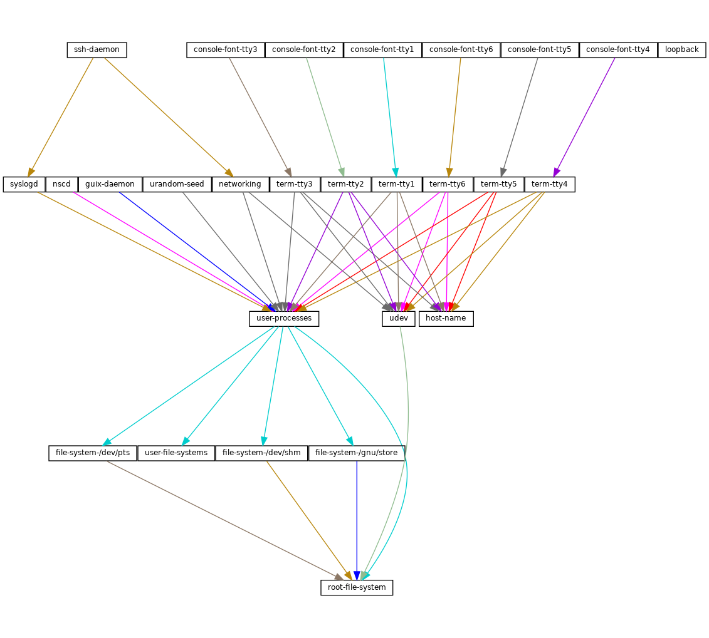

Next: Complex Configurations, Previous: Service Reference, Up: Defining Services [Contents][Index]
The (gnu services shepherd) module provides a way to define
services managed by the GNU Shepherd, which is the
initialization system—the first process that is started when the
system boots, also known as PID 1
(see Introduction in The GNU Shepherd Manual).
Services in the Shepherd can depend on each other. For instance, the SSH daemon may need to be started after the syslog daemon has been started, which in turn can only happen once all the file systems have been mounted. The simple operating system defined earlier (see Using the Configuration System) results in a service graph like this:
You can actually generate such a graph for any operating system
definition using the guix system shepherd-graph command
(see guix system shepherd-graph).
The %shepherd-root-service is a service object representing
PID 1, of type shepherd-root-service-type; it can be extended
by passing it lists of <shepherd-service> objects.
The data type representing a service managed by the Shepherd.
provisionThis is a list of symbols denoting what the service provides.
These are the names that may be passed to herd start,
herd status, and similar commands (see Invoking herd in The GNU Shepherd Manual). See the
provides slot in The GNU Shepherd Manual, for details.
requirement (default: '())List of symbols denoting the Shepherd services this one depends on.
one-shot? (default: #f)Whether this service is one-shot. One-shot services stop immediately
after their start action has completed. See Slots of services in The GNU Shepherd Manual, for more info.
respawn? (default: #t)Whether to restart the service when it stops, for instance when the underlying process dies.
startstop (default: #~(const #f))The start and stop fields refer to the Shepherd’s
facilities to start and stop processes (see Service De- and
Constructors in The GNU Shepherd Manual). They are given as
G-expressions that get expanded in the Shepherd configuration file
(see G-Expressions).
actions (default: '())This is a list of shepherd-action objects (see below) defining
actions supported by the service, in addition to the standard
start and stop actions. Actions listed here become available as
herd sub-commands:
herd action service [arguments…]
auto-start? (default: #t)Whether this service should be started automatically by the Shepherd. If it
is #f the service has to be started manually with herd start.
documentationA documentation string, as shown when running:
herd doc service-name
where service-name is one of the symbols in provision
(see Invoking herd in The GNU Shepherd Manual).
modules (default: %default-modules)This is the list of modules that must be in scope when start and
stop are evaluated.
The example below defines a Shepherd service that spawns
syslogd, the system logger from the GNU Networking Utilities
(see syslogd in GNU
Inetutils):
(let ((config (plain-file "syslogd.conf" "…")))
(shepherd-service
(documentation "Run the syslog daemon (syslogd).")
(provision '(syslogd))
(requirement '(user-processes))
(start #~(make-forkexec-constructor
(list #$(file-append inetutils "/libexec/syslogd")
"--rcfile" #$config)
#:pid-file "/var/run/syslog.pid"))
(stop #~(make-kill-destructor))))
Key elements in this example are the start and stop
fields: they are staged code snippets that use the
make-forkexec-constructor procedure provided by the Shepherd and
its dual, make-kill-destructor (see Service De- and
Constructors in The GNU Shepherd Manual). The start
field will have shepherd spawn syslogd with the
given option; note that we pass config after --rcfile,
which is a configuration file declared above (contents of this file are
omitted). Likewise, the stop field tells how this service is to
be stopped; in this case, it is stopped by making the kill system
call on its PID. Code staging is achieved using G-expressions:
#~ stages code, while #$ “escapes” back to host code
(see G-Expressions).
This is the data type that defines additional actions implemented by a Shepherd service (see above).
nameSymbol naming the action.
documentationThis is a documentation string for the action. It can be viewed by running:
herd doc service action action
procedureThis should be a gexp that evaluates to a procedure of at least one argument, which is the “running value” of the service (see Slots of services in The GNU Shepherd Manual).
The following example defines an action called say-hello that kindly
greets the user:
(shepherd-action
(name 'say-hello)
(documentation "Say hi!")
(procedure #~(lambda (running . args)
(format #t "Hello, friend! arguments: ~s\n"
args)
#t)))
Assuming this action is added to the example service, then you can do:
# herd say-hello example
Hello, friend! arguments: ()
# herd say-hello example a b c
Hello, friend! arguments: ("a" "b" "c")
This, as you can see, is a fairly sophisticated way to say hello. See Service Convenience in The GNU Shepherd Manual, for more info on actions.
Return a configuration action to display file, which should
be the name of the service’s configuration file.
It can be useful to equip services with that action. For example, the
service for the Tor anonymous router (see tor-service-type) is defined roughly like this:
(let ((torrc (plain-file "torrc" …)))
(shepherd-service
(provision '(tor))
(requirement '(user-processes loopback syslogd))
(start #~(make-forkexec-constructor
(list #$(file-append tor "/bin/tor") "-f" #$torrc)
#:user "tor" #:group "tor"))
(stop #~(make-kill-destructor))
(actions (list (shepherd-configuration-action torrc)))
(documentation "Run the Tor anonymous network overlay.")))
Thanks to this action, administrators can inspect the configuration file
passed to tor with this shell command:
cat $(herd configuration tor)
This can come in as a handy debugging tool!
The service type for the Shepherd “root service”—i.e., PID 1.
This is the service type that extensions target when they want to create
shepherd services (see Service Types and Services, for an example).
Each extension must pass a list of <shepherd-service>. Its
value must be a shepherd-configuration, as described below.
This data type represents the Shepherd’s configuration.
shepherd (default: shepherd)The Shepherd package to use.
services (default: '())A list of <shepherd-service> to start.
You should probably use the service extension
mechanism instead (see Shepherd Services).
The following example specifies the Shepherd package for the operating system:
(operating-system
;; ...
(services (append (list openssh-service-type))
;; ...
%desktop-services)
;; ...
;; Use own Shepherd package.
(essential-services
(modify-services (operating-system-default-essential-services
this-operating-system)
(shepherd-root-service-type config => (shepherd-configuration
(inherit config)
(shepherd my-shepherd))))))
This service represents PID 1.
Next: Complex Configurations, Previous: Service Reference, Up: Defining Services [Contents][Index]